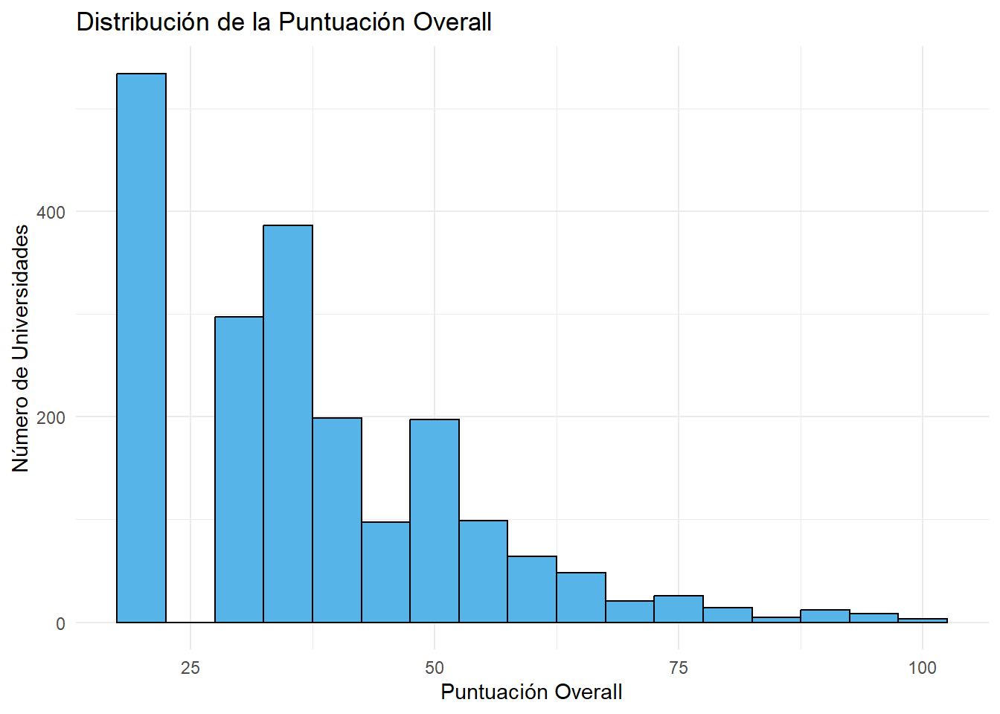
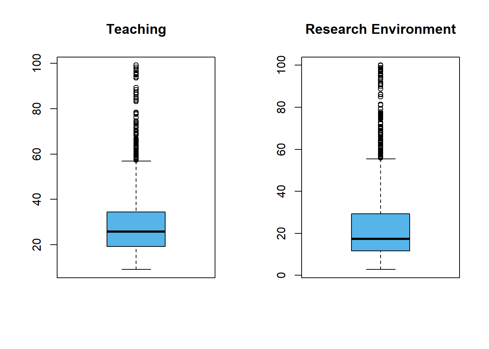
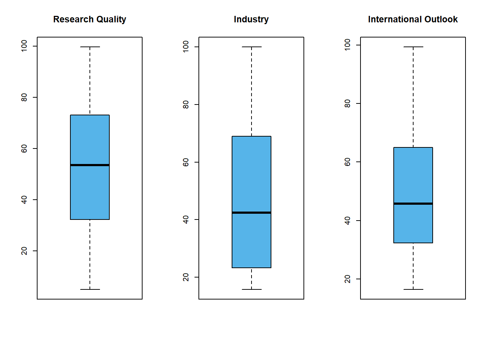
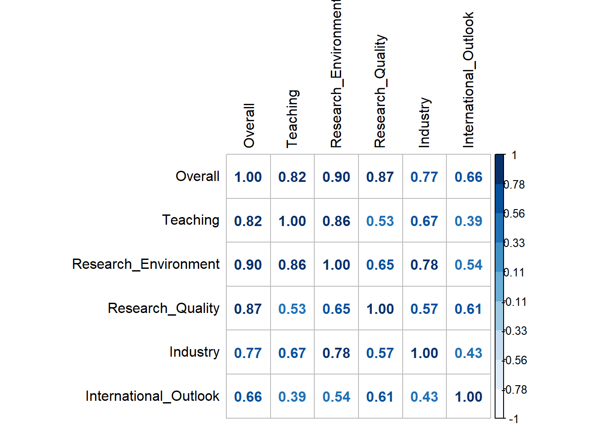
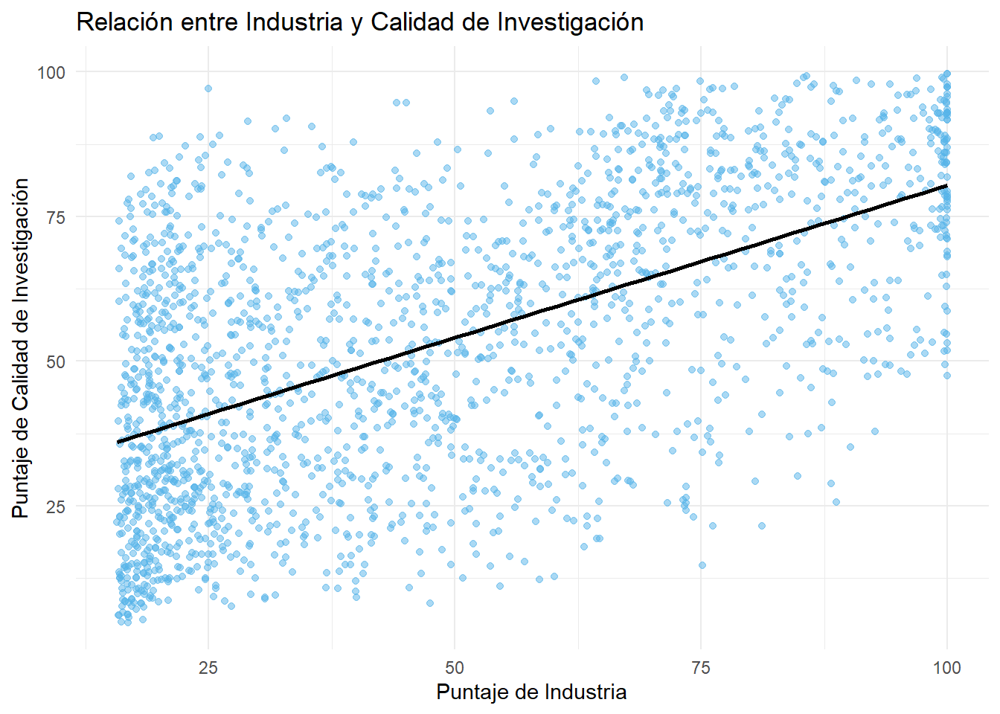
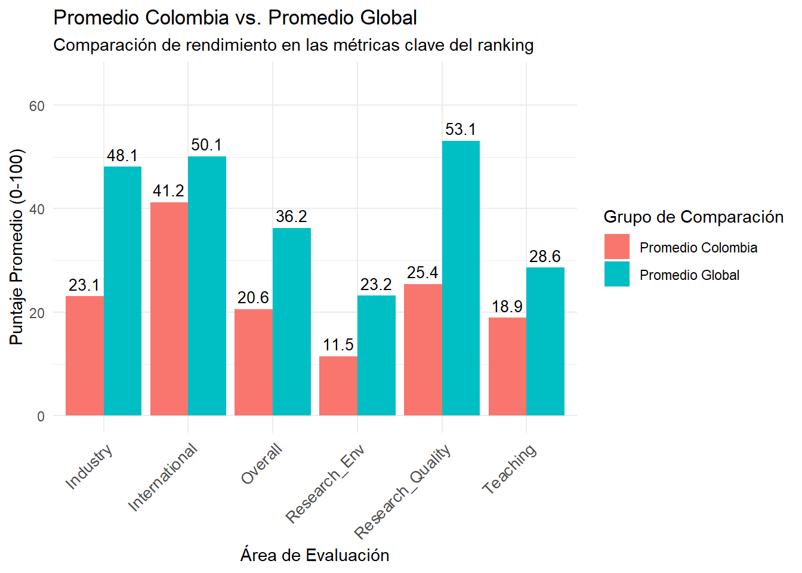
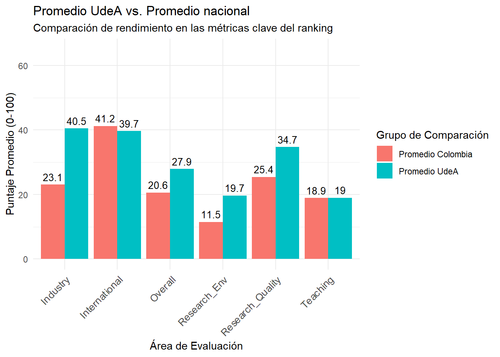

Análisis estadístico de la base de datos de World Ranking Universities 2025
Autor/a
David Villegas Ceballos
Fecha de publicación
19 de agosto de 2025
1 Introducción
La clasificación mundial de universidades se ha convertido en una herramienta de referencia para estudiantes, académicos y gobiernos, al ofrecer una panorámica del rendimiento y prestigio de la educación superior a nivel global. El ranking World University Rankings 2025 proporciona una evaluación multidimensional basada en métricas clave como la enseñanza, el entorno y la calidad de la investigación, la colaboración con la industria y la perspectiva internacional. Comprender la dinámica de estos datos no solo permite identificar a las instituciones líderes, sino también analizar las fortalezas y debilidades de los sistemas educativos a nivel nacional y regional.
Este informe presenta un análisis estadístico exhaustivo de dicho ranking con un triple objetivo: primero, realizar una exploración descriptiva para comprender la distribución y las características generales de las universidades a nivel mundial; segundo, llevar a cabo un análisis comparativo para identificar las variables que más influyen en el éxito de una institución; y tercero, aplicar estos análisis a un contexto local, examinando el posicionamiento de las universidades colombianas y, en particular, el de la Universidad de Antioquia.
A través de la limpieza de datos, la visualización y el análisis de correlaciones, este estudio busca desvelar los patrones que definen la excelencia académica en el siglo XXI y ofrecer una perspectiva informada sobre el panorama de la educación superior en Colombia frente al escenario internacional.
2 Preparación de Datos
2.1 Librerias
readxl, tidyverse, dplyr, tidyr para la manipulación de datos.
ggplot2corrplot para la creación de gráficos.
knitrkableExtra para la estilización de tablas.
2.2 Inspección de la base de datos
Encontramos que todas nuestras variables son categoricas, con 2826 filas y 11 columnas.
Con el objetivo de preparar la base de datos para el análisis estadístico, se aplicaron varias acciones de limpieza. Primero, se eliminaron todas las filas que no contenían el nombre de la universidad, pais o cuyo ranking era “Reporter”, ya que no aportan valor al análisis. A continuación, se estandarizó la columna Rank eliminando los caracteres especiales como + y =. Finalmente, se descartaron las columnas About_university 1 y 2 por no ser relevantes para un análisis estadístico. Este proceso garantiza un conjunto de datos limpio y consistente para los siguientes pasos. Con esos cambios, quedamos con 2010 filas y 9 columnas.
Nota: Al revisar la base de datos se encontró un dato el cual tenia el nombre de la universidad y el resto de datos, a excepcion del país. Debido a que tenia el link para sacar esa informacion faltante, la puse manualmente en la base de datos para evitar perder datos.
Datos Limpios
Rank
University
Country
Overall
Teaching
Research_Environment
Research_Quality
Industry
International_Outlook
1
University of Oxford
United Kingdom
98.5
96.8
100.0
98.8
99.6
97.3
2
Massachusetts Institute of Technology
United States
98.1
99.2
96.0
99.7
100.0
93.8
3
Harvard University
United States
97.7
97.3
99.9
99.3
85.7
90.1
4
Princeton University
United States
97.5
98.3
98.0
98.9
96.9
87.4
5
University of Cambridge
United Kingdom
97.4
95.9
99.9
97.6
88.4
97.1
6
Stanford University
United States
97.2
97.5
97.3
99.6
100.0
85.1
Las columnas Rank y Overall presentaban un formato mixto de texto, incluyendo tanto números individuales como rangos (ej: “55.1–58.2”), lo que impedía su uso en análisis estadísticos. Para solucionar esto, se transformaron todos los valores a un formato numérico. Los rangos fueron reemplazados por su punto medio, mientras que los números únicos se mantuvieron. Como resultado, ambas columnas ahora contienen datos puramente numéricos, listos para ser analizados.
Variable
Tipo de Dato
Rank
numeric
Overall
numeric
2.4.1 Nota Adicional sobre los Datos Excluidos
Durante el proceso de limpieza, se eliminaron las filas que no contenían información en las columnas de University o Country. Una investigación en la página web oficial de la clasificación permitió identificar el origen de estos registros.
Se constató que estas entradas corresponden a instituciones de la Federación Rusa. En la web oficial, estas universidades aparecen listadas pero visualmente diferenciadas (en un tono grisáceo), lo que indica que no forman parte del ranking principal. Si bien la fuente no especifica la razón de este tratamiento, se infiere que esta exclusión podría estar relacionada con el actual contexto geopolítico.
2.5 Variables categoricas
Tras la limpieza, se generaron dos nuevas variables categóricas, Rank_category y Overall_category, para facilitar el análisis por segmentos. La creación de Rank_category fue un paso fundamental, ya que el ranking numérico no es apto para cálculos directos. Por otro lado, la variable Overall_category se creó como un complemento a la columna Overall numérica, la cual se conserva para análisis cuantitativos precisos. Esto nos proporciona flexibilidad, permitiendo tanto comparaciones entre grupos de rendimiento como cálculos estadísticos detallados.
Ya que están limpios nuestros datos, realizamos una identificación de las variables con las que quedamos, para así poder proseguir con nuestro análisis estadístico.
Variable
Tipo
Rank
Cuantitativa
University
Cualitativa
Country
Cualitativa
Overall
Cuantitativa
Teaching
Cuantitativa
Research_Environment
Cuantitativa
Research_Quality
Cuantitativa
Industry
Cuantitativa
International_Outlook
Cuantitativa
Rank_category
Cualitativa
Overall_category
Cualitativa
3 Análisis estadistico
Para realizar este análisis, lo que se hizo, fue plantear varias preguntas por secciones para poder responderlas con los datos que tenemos, ya que la base de datos está limpia, y esto nos permite tener un gran alcance
3.1 Preguntas para el análisis
3.2 Análisis descriptivo
¿Cuántas universidades hay en cada Overall_category?
¿La mayoría de las universidades se concentran en los rangos más bajos o más altos?
¿Como se distribuye cada una de las métricas clave (Teaching, Research_Environment, Research_Quality, Industry, International_Outlook) en todo el conjunto de datos?
Solo una pequeña parte del total de las universidades se posiciona en los primeros puestos del ranking; la mayor parte se encuentra con un Overall menor a 40. Además, vemos que hay un claro comportamiento que va decayendo desde las categorías bajas hasta las categorías altas.
Conteo de universidades
Overall_category
n
Muy bajo (40-)
1217
Bajo (40-49.9)
394
Medio (50-59.9)
223
Bueno (60-69.9)
97
Alto (70-79.9)
46
Muy alto (80-89.9)
17
Excelente (90+)
16
El histograma de la puntuación Overall revela que la mayor concentración de universidades se encuentra en el rango de puntajes medios-bajos, con una frecuencia que disminuye progresivamente a medida que el puntaje aumenta, observándose además que no hay ninguna universidad con un Overall menor a 10. Esto indica que, si bien muchas instituciones alcanzan un nivel de rendimiento competitivo, la verdadera excelencia (puntajes de 80 o más) es un logro mucho más exclusivo y menos frecuente en el panorama global.

En el boxplot identificamos una fuerte conexión entre Enseñanza y Ambiente de Investigación; las variables Teaching y Research_Environment muestran distribuciones casi idénticas en sus diagramas, con la mayoría de las universidades agrupadas en puntajes bajos y un grupo con puntajes muy altos. Esta similitud se confirma con una correlación muy alta (0.86), lo que sugiere que ambas crecen de forma conjunta.

El análisis de los boxplots revela distribuciones muy distintas. La Calidad de la Investigación (Research Quality) se muestra como la más equilibrada, con una distribución simétrica que sugiere una competencia generalizada entre las universidades. En marcado contraste, la Perspectiva Internacional (International Outlook) y, sobre todo, la Industria (Industry), presentan una gran parte de valores bajos. Esto indica que la excelencia en la internacionalización y, de manera más exclusiva, en la colaboración industrial, no son la norma, sino los verdaderos factores diferenciadores que distinguen a la élite universitaria del resto de instituciones del ranking.

3.3 Análisis comparativo y de relaciones
¿Cómo cambian las métricas promedio (Teaching, Industry, etc.) a medida que descendemos en la Overall_category?
¿Cuál es el perfil de una universidad “Excelente (90+)” vs. una “Buena (60-69.9)”?
¿La perspectiva internacional (International_Outlook) es significativamente más alta en las categorías superiores?
¿Qué métricas tienen la correlación más fuerte con el puntaje Overall? (Una matriz de correlación es perfecta para esto).
¿Existe una relación visible entre los ingresos de la industria (Industry) y la calidad de la investigación (Research_Quality)? (Un gráfico de dispersión te ayudará a verlo).
En nuestro análisis, encontramos que, para competir a nivel global, la Perspectiva Internacional es el requisito mínimo. Si bien muchas instituciones logran una alta calidad de investigación y fuertes lazos con la industria, el factor que verdaderamente define a las universidades top es la abrumadora superioridad de su ambiente de investigación. Este ecosistema integral de financiación, infraestructura y concentración de talento es la barrera definitiva que explica por qué la cima del ranking está reservada para un grupo tan exclusivo de universidades.
Perfil Promedio por Categoría Overall
Overall_category
N_Universidades
Teaching_Avg
Research_Env_Avg
Research_Quality_Avg
Industry_Avg
International_Avg
Excelente (90+)
16
93.0
96.4
97.2
94.7
85.4
Muy alto (80-89.9)
17
77.4
84.6
94.0
87.8
81.8
Alto (70-79.9)
46
62.8
68.3
89.2
89.8
79.2
Bueno (60-69.9)
97
48.0
51.3
86.1
86.7
75.3
Medio (50-59.9)
223
37.7
37.5
79.3
79.5
69.7
Bajo (40-49.9)
394
30.1
25.1
67.8
57.9
59.0
Muy bajo (40-)
1217
22.1
14.1
38.4
33.3
39.6
Para entender la relación entre las distintas métricas, se generó una matriz de correlación. El análisis de correlación revela que la puntuación Overall está predominantemente determinada por el rendimiento en investigación. Específicamente, el ambiente de investigación (Research_Environment) y la calidad de la investigación (Research_Quality) son los predictores más fuertes del éxito en el ranking, con correlaciones de 0.90 y 0.87 respectivamente. La Enseñanza (Teaching) también es un pilar fundamental (0.82).
Por otro lado, la perspectiva internacional (International_Outlook) emerge como un factor más independiente, con correlaciones más débiles con las otras métricas, sugiriendo que requiere estrategias diferentes para aumentar su puntaje. Finalmente, la fuerte sinergia entre el ambiente de investigación (Research_Environment) y la enseñanza (Teaching) (0.86) subraya que un entorno de investigación saludable es un motor clave para la calidad docente.

El gráfico de dispersión muestra una relación positiva, aunque moderada, entre la industria y la calidad de la investigación. Si bien hay una tendencia a que las universidades con alta calidad de investigación también tengan buenos puntajes en industria, la dispersión de los puntos indica que esta no es una relación absoluta.

3.4 Análisis por paises
3.4.1 Internacional
¿Qué países tienen la mayor cantidad de universidades en la categoría “Excelente (90+)” o Muy alto (80-89.9)“?
El prestigio académico global está fuertemente concentrado en Estados Unidos, con el Reino Unido como segundo. El resto de los países, aunque importantes, juegan un papel mucho menor en términos de cantidad de instituciones de primer nivel.
Top 10 Países con las mejores Universidades
Country
n
United States
19
United Kingdom
5
China
2
Singapore
2
Switzerland
2
Canada
1
Germany
1
Japan
1
3.4.2 Colombia
¿Cuántas universidades colombianas aparecen en el ranking y cuales son las mejores 10?
¿Cuál es el puntaje promedio de Colombia en cada una de las métricas, y según estos, cuales son las fortalezas y debilidades del país?
Al comparar los promedios de Colombia con el promedio global, ¿en qué áreas destacan las universidades colombianas y en cuáles tienen una brecha por cerrar?
En Colombia, en total aparecen 23 universidades en este ranking, en nuestro top 10 podemos destacar que aparecen 4 universidades que tienen sede en medellin, entre estas esta nuestra queridisima UdeA, la cual se encuentra en el quinto lugar.
n
23
Universidades de Colombia en el ranking
x
Icesi University
University of la Costa
University of the Andes, Colombia
Universidad de Cartagena
University of Antioquia
Antonio Nariño University
CES University
Del Rosario University
EAFIT University
El Bosque University
Instituto Tecnológico Metropolitano
National University of Colombia
Nueva Granada Military University
Pontificia Universidad Javeriana
Technological University of Pereira
Universidad del Valle
Universidad Distrital Francisco José de Caldas
Universidad Industrial de Santander (UIS)
Universidad Pedagogica y Tecnologica de Colombia - UPTC
Universidad Pontificia Bolivariana (UPB)
University of La Sabana
University of Medellín
University of the North, Colombia
Las universidades colombianas han logrado construir un buen perfil internacional, lo que les permite competir en el escenario global. Sin embargo, la inversión y el soporte al entorno de investigación representan su área más vulnerable. La calidad de la enseñanza también presenta una oportunidad de mejora significativa. Las universidades demuestran una notable eficiencia al producir investigación de calidad a pesar de las limitaciones de su entorno. Esto podría mejorar con una mayor inversión en infraestructura y recursos para la investigación.
Perfil Promedio por variable de Colombia
N_Universidades
Overall_Avg
Teaching_Avg
Research_Env_Avg
Research_Quality_Avg
Industry_Avg
International_Avg
23
20.6
18.9
11.5
25.4
23.1
41.2
Las universidades colombianas han logrado posicionarse en el escenario mundial gracias a una fuerte estrategia de internacionalización, siendo esta su área de mayor competitividad. Sin embargo, para escalar posiciones de manera significativa, es necesario abordar las profundas brechas en su entorno de investigación, tanto en recursos como en impacto. Fortalecer la colaboración con la industria y mejorar el entorno de la enseñanza son los siguientes pasos para construir un sistema de educación superior más robusto y competitivo a nivel global.

3.5 Universidad de Antioquia
Posicionamiento de la Universidad de Antioquia:
¿En qué métrica obtiene su mejor puntaje en comparación con las otras universidades de Colombia?
¿En qué Rank_category y Overall_category se encuentra la Universidad de Antioquia?
¿Cuál es su puntaje más bajo en comparación con las líderes nacionales?
¿Cuales son las metricas de la UdeA, respecto a las metricas promedio de las universidades de Colombia?
La Universidad de Antioquia está bien posicionada en Colombia, y su éxito tiene una razón. Su gran fortaleza radica en la colaboración con la industria y en la calidad de su investigación, áreas donde supera con gran ventaja al resto del país y que explican por qué tiene una mejor calificación general. Sin embargo, en enseñanza tiene un puntaje muy parecido al promedio nacional, y en el aspecto internacional está un poco por debajo. Esto nos dice que la UdeA brilla especialmente por su capacidad de generar conocimiento útil y práctico, siendo este su verdadero sello distintivo, más que por destacar en todas las áreas por igual.

4 Conclusiones
Este análisis estadístico del World University Rankings 2025 ha permitido extraer conclusiones significativas sobre la estructura de la excelencia en la educación superior a nivel global y local.
La excelencia es exclusiva y se basa en la investigación: A nivel mundial, el éxito en el ranking no se distribuye de manera uniforme. La gran mayoría de las universidades se concentran en los rangos medios y bajos de la clasificación. El factor diferenciador clave para alcanzar la élite académica es un ecosistema de investigación robusto, como lo demuestran las altas correlaciones (superiores a 0.85) entre el puntaje Overall y las métricas de Research_Environment y Research_Quality.
Estados Unidos y el Reino Unido dominan la cima: El liderazgo académico global es dominado por Estados Unidos, seguido por el Reino Unido, dado que albergan la mayor cantidad de instituciones en las categorías más altas del ranking, estableciendo un estándar de rendimiento difícil de igualar para otras instituciones.
Colombia: fuerte en internacionalización, débil en entorno de investigación: Las universidades colombianas han logrado competividad en el ranking global gracias a una notable fortaleza en su Perspectiva Internacional, superando incluso el promedio mundial en esta métrica. Sin embargo, la principal área de mejora y la mayor brecha con el promedio global reside en el Entorno de Investigación, lo que sugiere que la falta de inversión y recursos en este campo es el principal obstáculo para escalar posiciones.
La Universidad de Antioquia: Un referente nacional impulsado por la industria y la calidad investigativa: La UdeA se destaca en el contexto colombiano no por seguir el patrón nacional, sino por sus fortalezas distintivas. Su liderazgo se fundamenta en una calidad de investigación y una conexión con la industria significativamente superiores al promedio nacional. Esto indica un modelo de éxito basado en la generación de conocimiento aplicado y relevante, consolidándola como un referente en el país.
En síntesis, mientras que la internacionalización es la puerta de entrada al escenario global para las universidades colombianas, el camino hacia la excelencia sostenida requiere una inversión estratégica y decidida en el fortalecimiento de sus ecosistemas de investigación.
Wickham, Hadley, Mara Averick, Jennifer Bryan, Winston Chang, Lucy D’Agostino McGowan, Romain François, Garrett Grolemund, et al. 2019. «Welcome to the tidyverse» 4: 1686. https://doi.org/10.21105/joss.01686.
Wickham, Hadley, Romain François, Lionel Henry, Kirill Müller, y Davis Vaughan. 2023. «dplyr: A Grammar of Data Manipulation». https://CRAN.R-project.org/package=dplyr.